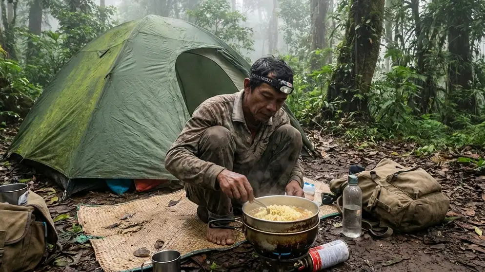

1. Pelarian Singkat Menuju Kesunyian Alam Bebas
Kehidupan masyarakat modern hari ini seringkali didominasi oleh layar gawai, tenggat waktu pekerjaan yang mengikat, dan kebisingan lalu lintas kota yang seakan tiada henti. Di tengah kepenatan yang menumpuk tersebut, pencarian terhadap kedamaian (healing) menjadi sebuah insting alamiah yang tak bisa dihindari. Sayangnya, banyak orang yang mengobati stres dengan berlibur ke pusat-pusat wisata buatan yang padat pengunjung, yang pada akhirnya justru menambah rasa lelah. Bagi jiwa-jiwa petualang yang benar-benar ingin memutuskan hubungan sejenak dengan rutinitas duniawi, jawabannya hanyalah satu: kembali menyatu dengan keliaran alam terbuka.
Jika Anda sepakat dengan filosofi tersebut, maka Eksplorasi Camping Ground Parangan: Pesona Alam Tersembunyi untuk Pengalaman Berkemah Otentik adalah wacana liburan yang harus segera Anda realisasikan. Belum banyak yang menyadari bahwa Parangan menyimpan sebuah surga tersembunyi yang amat memukau bagi para pecinta aktivitas kemah konvensional. Melalui artikel penjelajahan ini, kita akan membongkar secara mendalam daya tarik utama dari hutan Parangan, mengapa menggunakan tenda dome klasik jauh lebih memuaskan ketimbang *glamping* mewah, serta persiapan teknis apa saja yang wajib Anda bawa agar petualangan murni ini menjadi sebuah memori indah yang tak akan pernah lekang oleh waktu.
2. Keunikan dan Pesona Alam Camping Ground Parangan
Di saat lahan perkemahan lain mulai dipenuhi oleh bangunan-bangunan beton komersial, Parangan tetap kukuh mempertahankan keasrian dan keaslian vegetasi alaminya.
Suasana Hutan Pinus yang Masih Perawan
Daya pikat paling absolut dari Camping Ground Parangan adalah rimbunnya tegakan pohon-pohon pinus berukuran masif yang usianya sudah puluhan tahun. Jarak antar pohon yang cukup berdekatan menciptakan sebuah kanopi alami yang sangat rapat. Di siang hari, sinar matahari tidak akan menyengat secara langsung, melainkan akan jatuh perlahan menembus celah-celah dedaunan pinus, menciptakan siluet cahaya (Ray of Light) yang teramat sinematik. Permukaan tanahnya ditutupi oleh guguran daun jarum pinus kering yang empuk, menjadikannya karpet alami yang sangat nyaman untuk diduduki.
Kualitas Udara Bersih dan Jauh dari Kebisingan
Karena lokasinya yang cukup tersembunyi dan jauh dari jalan raya utama, Anda tidak akan mendengar suara deru knalpot atau sirine ambulans. Satu-satunya suara yang akan mendominasi indera pendengaran Anda adalah hembusan angin pegunungan (white noise) dan kicauan burung liar di pagi hari. Berada di dataran tinggi, Parangan menyuguhkan suplai oksigen yang sangat murni. Menghirup udara segar yang mengandung fitonsida (minyak atsiri dari pinus) di kawasan ini secara medis terbukti ampuh menurunkan kadar hormon stres (kortisol) di dalam tubuh Anda secara drastis.
BACA JUGA (Eksplorasi Kemah Otentik):
3. Mengapa Memilih Tenda Dome untuk Berkemah di Parangan?
Di tengah menjamurnya tren *glamping* berskala hotel berbintang, para petualang sejati tetap dengan teguh memilih tenda dome berbentuk setengah bola sebagai tempat bernaung utama mereka.
Fleksibilitas Mendirikan Tenda di Berbagai Kontur Tanah
Kawasan Parangan masih memiliki kontur tanah alami yang berundak dan bervariasi. Tenda dome klasik menawarkan kebebasan tak terbatas (freedom of mobility). Tenda ini sangat ringan saat dipacking ke dalam ransel (carrier) dan tidak membutuhkan lahan buatan yang luas untuk didirikan. Anda bisa dengan mudah menemukan ceruk datar di antara dua batang pohon pinus besar, merakit kerangka fiberglass-nya dalam waktu kurang dari sepuluh menit, dan langsung memiliki "rumah" pribadi dengan pemandangan (view) paling eksklusif yang Anda pilih sendiri.
Perlindungan Optimal dari Suhu Ekstrem Pegunungan
Jangan tertipu oleh bentuknya yang sederhana. Tenda dome berspesifikasi pendakian memiliki desain aerodinamis yang mutlak. Bentuk melengkungnya mampu memecah serta mengalirkan hembusan angin badai dari berbagai arah tanpa memberikan perlawanan yang bisa mematahkan tiang rangka. Syarat mutlaknya: pastikan Anda menggunakan tenda bertipe Double Layer. Lapisan jaring bagian dalam memastikan Anda tidak kehabisan oksigen, sementara lapisan pelindung terluar (flysheet) yang terbuat dari bahan waterproof PU akan memblokir secara total guyuran hujan lebat dan memastikan uap embun (kondensasi) tidak menetes mengenai tubuh Anda.
4. Persiapan Logistik untuk Jelajah Alam di Parangan
Kemah yang otentik menuntut kesiapan fisik dan manajerial dari sang petualang. Karena Anda menjauh dari fasilitas kemewahan, logistik Anda adalah nyawa Anda.
Sistem Pakaian Berlapis (Layering System)
Suhu malam di wilayah hutan Parangan bisa anjlok tajam. Buang jauh-jauh ide untuk menggunakan celana bahan jeans (denim) tebal yang sangat sulit kering bila terkena embun pagi. Anda wajib menerapkan 3-Layering System. Gunakan pakaian lapisan dasar (base layer) berbahan dry-fit untuk menyerap keringat. Di atasnya, tumpuk dengan jaket berbahan polar atau fleece untuk mengunci suhu panas tubuh. Lapisan terakhir (outer layer), kenakanlah jaket parasut windbreaker atau hardshell anti-air untuk mematahkan laju angin malam. Bekali diri Anda dengan kupluk (beanie), sarung tangan, dan kaus kaki hangat.
Peralatan Tidur (Sleep System) yang Esensial
Jangan pernah tidur dengan membiarkan punggung telanjang Anda bersentuhan langsung dengan lantai alas tenda, karena tanah hutan yang basah akan menyedot hawa panas tubuh Anda dengan amat cepat secara konduksi. Gelarlah matras aluminium foil di dasar lantai tenda untuk memantulkan radiasi suhu dingin, lalu tumpuklah dengan matras spons atau kasur angin (sleeping pad). Terakhir, pastikan tubuh Anda terbungkus rapat di dalam kantong tidur (sleeping bag) tipe mummy yang mengerucut dan berbahan bulu polar hangat di bagian dalamnya.
Membawa Peralatan Memasak Mandiri (Nesting)
Anda adalah koki bagi petualangan Anda sendiri. Bawalah kompor gas portabel lipat (beserta tabung gas kaleng/hi-cook ekstra). Jangan lupa membawa tameng pelindung angin (windshield) aluminium agar api tidak mudah padam saat memasak di luar ruangan. Gunakan panci aluminium bersusun (nesting) untuk mengolah logistik makanan ringkas tinggi kalori seperti mi instan, telur, sosis, hingga menyeduh air mineral.

Mempersiapkan logistik sarapan secara mandiri menggunakan peralatan masak sederhana (nesting) memberikan kepuasan batin yang mendalam dan mengasah insting kemandirian untuk bertahan hidup. (Ilustrasi: Unsplash)5. Aktivitas Seru Saat Berkemah di Parangan
Liburan ke alam bukan berarti bermalas-malasan di dalam tenda sepanjang waktu. Rangkai aktivitas yang merekatkan kembali kebersamaan.
Memasak di Alam Bebas dan Menikmati Kopi Pagi
Memasak di alam terbuka (camp cooking) adalah ritual paling dinanti. Bangunlah di pagi buta (sekitar pukul 05:30) dan segera nyalakan kompor lapangan Anda. Menikmati seduhan kopi hitam robusta atau teh jahe panas sambil melihat kabut perlahan naik meninggalkan dasar hutan adalah cara healing visual yang tidak ada bandingannya. Hawa dingin pegunungan akan bertindak sebagai bumbu penyedap alami yang membuat makanan sesederhana apa pun terasa layaknya hidangan restoran bintang lima.
Kehangatan Malam di Sekitar Api Unggun
Saat malam menggelapkan seisi hutan Parangan, nyalakanlah perapian di area alas bakar (fire-pit) yang telah diamankan. Berkumpullah membentuk lingkaran bersama para sahabat atau keluarga tercinta. Simpan seluruh gawai cerdas (smartphone) Anda di dalam tas dan lakukan puasa digital (digital detox). Hawa panas dari bara api unggun tersebut adalah medium terbaik untuk melunturkan kekakuan komunikasi, melangsungkan sesi deep-talk yang jujur, dan menjalin kembali ikatan batin yang merenggang akibat kesibukan kerja di kota.
BACA JUGA (Tips Logistik & Persiapan):
6. Menjaga Kelestarian Alam: Etika Berkemah yang Wajib Dipatuhi
Status Anda sebagai seorang penjelajah sejati diukur bukan dari seberapa mahal peralatan yang Anda beli, melainkan dari seberapa tinggi adab Anda dalam menjaga ekosistem hutan.
Terapkan Prinsip Leave No Trace
Prinsip dasar Leave No Trace (Jangan tinggalkan jejak apa pun) wajib hukumnya untuk dijalankan. Bawalah selalu kantong sampah mandiri (trash bag). Kumpulkan semua sisa bungkus plastik makanan ringan, kulit buah, hingga sekecil puntung rokok, lalu bawalah turun menuju tong penampungan sampah di kota. Meninggalkan sampah di alam liar sangat fatal; ia bukan saja merusak estetika visual, namun akan meracuni tanah dan merusak rantai makanan satwa asli Parangan.
Menghargai Ekosistem dan Pengunjung Lain
Hormatilah kesunyian hutan yang merupakan rumah bagi ragam burung dan serangga liar. Dilarang memutar musik dengan volume pengeras suara yang menggelegar layaknya konser di malam hari. Selain mengganggu satwa, hal tersebut mengganggu tetangga tenda Anda yang mencari ketenangan. Buatlah api unggun secara bertanggung jawab, jangan pernah membakar rumput hidup atau menebang dahan basah dari pohon pinus karena akan melukai pertumbuhan pohon tersebut.
7. Kesimpulan
Merencanakan liburan bertajuk Eksplorasi Camping Ground Parangan: Pesona Alam Tersembunyi untuk Pengalaman Berkemah Otentik adalah sebuah penawar rindu yang teramat manjur bagi siapa pun yang merasa lelah dengan artifisialnya kehidupan modern. Menanggalkan kemewahan dan memilih untuk menginap dengan tenda dome klasik di bawah tajuk hutan pinus Parangan akan melatih ulang insting kemandirian Anda. Melalui penguasaan layering system pakaian yang tangguh, pemanfaatan perlengkapan tidur (sleep system) yang akurat, serta kemauan untuk mempertahankan etika penjagaan alam (Leave No Trace), petualangan ini tidak hanya memulihkan raga dari kelelahan, tetapi menajamkan kembali kejernihan jiwa. Kemasi ransel Anda secara taktis, matikan layar gawai, dan biarkan keasrian alam Parangan mendekap erat segala kepenatan di dada Anda akhir pekan nanti.